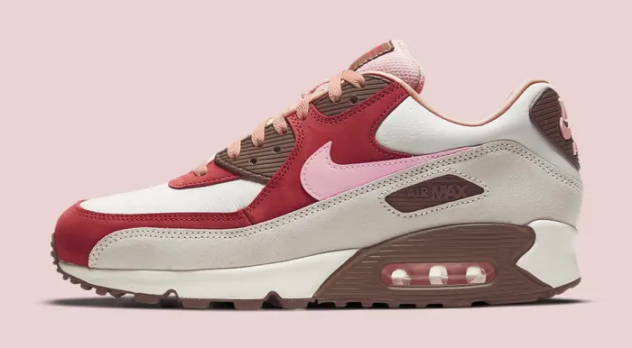

Story and History
The Nike Air Max, first introduced in 1987, revolutionized the sneaker industry by introducing visible Air cushioning.
Designed by Tinker Hatfield, the Air Max 1 showcased a window to the innovative Air technology, providing not only
comfort but also a distinctive aesthetic. The visible Air unit became an iconic feature of the Air Max line,
evolving over the years with different models and designs.
The Air Max series has been at the forefront of innovation, pushing boundaries in both design and technology.
It has become synonymous with comfort, style, and a commitment to pushing the limits of athletic footwear.
Nike Air Max 1 '86 “Big Bubble”
Colorways
The Nike Air Max series has seen an extensive range of colorways, catering to diverse tastes and preferences.
From classic monochromatic designs to vibrant and bold combinations, the Air Max color palette reflects
the dynamic nature of the sneaker culture.
Collaborations with artists, designers, and cultural influencers have resulted in limited-edition
releases with unique color schemes, further contributing to the Air Max's reputation as a style statement.


Cultural Impact
The Nike Air Max has transcended its athletic origins to become a cultural icon. Embraced by athletes,
musicians, and streetwear enthusiasts alike, the Air Max series has left an indelible mark on global fashion
and pop culture.
Its visibility in music videos, films, and various subcultures showcases its versatility and adaptability.
The Air Max has become more than just a sneaker; it represents a lifestyle and a connection to a broader cultural movement.